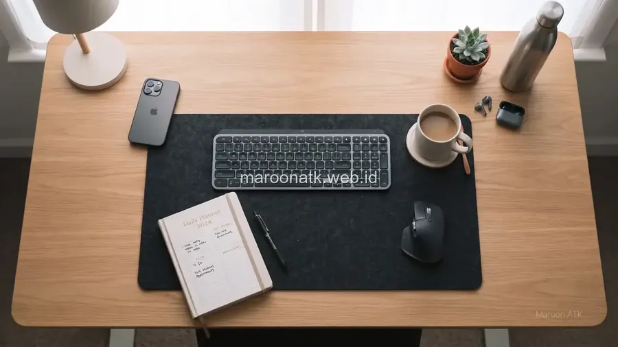

Pentingnya Memilih Vendor Custom Furniture Kantor yang Teruji
Jawaban singkat: Dalam memilih vendor custom furniture kantor executive, portfolio perlu dinilai bukan hanya dari estetika visual foto katalog, melainkan dari kemampuan memahami dimensi ruang, presisi pengerjaan konstruksi kayu, kualitas material dan finishing, kerapian jalur kabel, sistem quality control, serta keandalan instalasi di lokasi. Untuk proyek pengadaan B2B, calon pembeli sebaiknya meminta spesifikasi teknis lengkap (BoQ), shop drawing 3D, timeline pengerjaan, dan jaminan garansi resmi sebelum Purchase Order (PO) disetujui.
Kawasan pusat bisnis premium seperti Segitiga Emas Jakarta (Sudirman, Thamrin, Kuningan, dan SCBD) menjadi pusat konsentrasi kantor pusat korporat, firma hukum internasional, perbankan, dan institusi multinasional. Bagi level direksi dan jajaran C-Suite, ruang kerja eksekutif bukan sekadar tempat menjalankan tugas manajerial, melainkan representasi langsung dari reputasi, wibawa, dan stabilitas perusahaan saat menerima investor maupun mitra strategis.
Furniture modular massal (ready-stock) sering kali tidak mampu memenuhi standar estetika dan keterbatasan ukuran fisik ruangan executive. Oleh karena itu, pengadaan custom furniture kantor menjadi solusi mutlak. Namun, memilih vendor interior custom membutuhkan kecermatan tinggi dari komite pengadaan dan procurement manager: bagaimana cara menilai portfolio vendor agar hasil pengerjaan benar-benar sesuai dengan ekspektasi dewan direksi?

Sistem Custom Furniture Meja Resepsionis dan Kabinet Arsip Korporat
Rancangan lobi kantor yang representatif dengan finishing HPL presisi dan aksen lighting.
1. Elemen Utama yang Membedakan Furniture Executive
Ruang direksi dan ruang rapat dewan komisaris memiliki kebutuhan spesifik yang harus mampu diwujudkan oleh vendor custom interior:
- Meja Direksi (Executive Desk) dengan Modesty Panel: Meja berukuran proporsional (panjang 200–260 cm) dengan sudut chamfered, bantalan kulit sintetis terintegrasi (leather desk pad), dan modesty panel solid di bagian depan.
- Credenza & Side Cabinet Terpadu: Lemari penyimpanan samping dengan sistem laci soft-close untuk menyimpan dokumen rahasia, perangkat laptop, dan printer pribadi tanpa mengacaukan permukaan meja utama.
- Sistem Manajemen Kabel Tersembunyi (Concealed Cable Management): Kotak soket pop-up aluminium pada daun meja yang menyalurkan kabel HDMI, USB-C, dan daya langsung ke bawah lantai tanpa terlihat menjuntai.
- Backdrop & Acoustic Wall Panel: Panel dinding beraksen kayu veneer atau slat acoustic yang memperindah latar belakang video conference sekaligus meredam gema suara.

Ketelitian pada bagian joinery, pelapisan edging PVC/veneer, dan fitting hardware menentukan daya tahan jangka panjang furniture kantor custom.

Kriteria Supplier Furniture Kantor Jakarta dengan Garansi Resmi B2B
Faktor legalitas, sampel material fisik, dan dukungan purna jual yang wajib diperiksa purchasing.
2. Cara Kritis Membaca Contoh Portfolio Vendor Custom Furniture
Saat mengevaluasi dokumen portfolio dari calon vendor pengadaan, divisi procurement disarankan menelaah beberapa parameter teknis berikut:
- Konsistensi Tekstur Material: Perhatikan apakah lembar veneer kayu tersusun rapi dengan pola serat yang serasi (book-matched) atau terlihat belang.
- Kerapian Sambungan Sudut (Joinery & Edging): Sudut meja dan laci harus memiliki sambungan presisi 45 derajat atau edging tanpa bekas lem yang meleleh.
- Kualitas Hardware Bergerak: Pastikan rel laci menggunakan sistem ball-bearing full extension dan engsel pintu lemari menggunakan hidrolik soft-close dari merek terpercaya.
- Kesesuaian Desain 3D vs Realisasi: Minta contoh perbandingan antara gambar kerja 3D render yang diajukan dengan foto hasil akhir setelah terpasang di lokasi proyek.
Matriks Tahapan Pengadaan Custom Furniture B2B
| Fase Pengadaan | Aktivitas Utama | Output / Dokumen Kunci |
|---|---|---|
| 1. Survei Lokasi | Pengukuran as-built dinding, lantai, posisi titik daya listrik, dan jalur lift barang gedung | Data dimensi ruang aktual dan catatan loading dock |
| 2. Desain Teknis | Pembuatan shop drawing 2D detail potongan, 3D visual rendering, dan pemilihan sampel material | Persetujuan gambar kerja (Sign-off Drawing) |
| 3. Fabrikasi Workshop | Pemotongan panel mesin CNC, perakitan dasar, pelapisan HPL/Veneer, dan finishing spray | Laporan progres fabrikasi dan quality control internal |
| 4. Instalasi Onsite | Pengiriman berkala di luar jam kerja kantor, perakitan modul, dan pemasangan kelistrikan | Uji fungsi laci, engsel, kerapian instalasi |
| 5. Serah Terima | Inspeksi bersama tim procurement, pengecekan defect list, dan pembersihan area | BAST resmi, kartu garansi, dan e-Faktur PPN |

Inspirasi Desain Meja Kerja Modern Minimalis untuk Kantor B2B
Konsep modular workstation dengan estetika clean-line dan fungsionalitas tinggi.
Pertanyaan Umum (FAQ) Custom Furniture Kantor Executive
Periksa detail pengerjaan (craftsmanship), kerapian sambungan sudut (edging & joinery), konsistensi serat kayu/veneer, sistem integrasi jalur kabel listrik dan data, kekuatan engsel soft-close, serta kesesuaian gambar teknis 3D dengan hasil realisasi akhir di lokasi.
Item custom meliputi meja kerja eksekutif (executive desk) berukuran besar dengan modesty panel tersembunyi, credenza samping, lemari arsip display piala/dokumen privat, meja meeting board of directors, backdrop dinding panel akustik, serta sofa lounge tamu VIP.
Survei teknis lokasi penting untuk mengukur dimensi dinding secara riil (as-built), memeriksa sudut kelurusan lantai, mengidentifikasi posisi stop kontak lantai (floor socket), serta memastikan jalur akses lift barang (loading dock) saat proses mobilisasi material.
Durasi pengerjaan bergantung pada kompleksitas desain, jenis material, jumlah unit, kapasitas produksi workshop, serta kondisi kesiapan lokasi instalasi. Umumnya berkisar antara 2 hingga 4 minggu setelah gambar kerja (shop drawing) disetujui secara resmi.
Calon pembeli B2B wajib meminta Surat Penawaran Harga (SPH) berkop resmi, rincian spesifikasi material (BoQ), shop drawing 2D/3D dengan ukuran presisi, jadwal timeline pengerjaan (time schedule), klausul garansi purna jual, serta konfirmasi penerbitan e-Faktur PPN.

Arby Ardiansyah
Arby Ardiansyah mengulas solusi pengadaan perlengkapan kantor, custom furniture korporat, dan strategi supply chain B2B untuk institusi dan perusahaan di Indonesia bersama MAROON ATK.